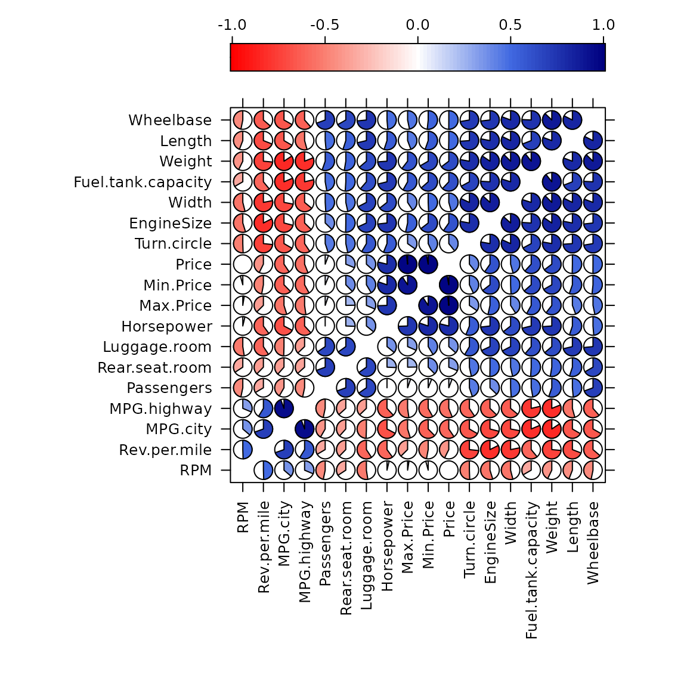
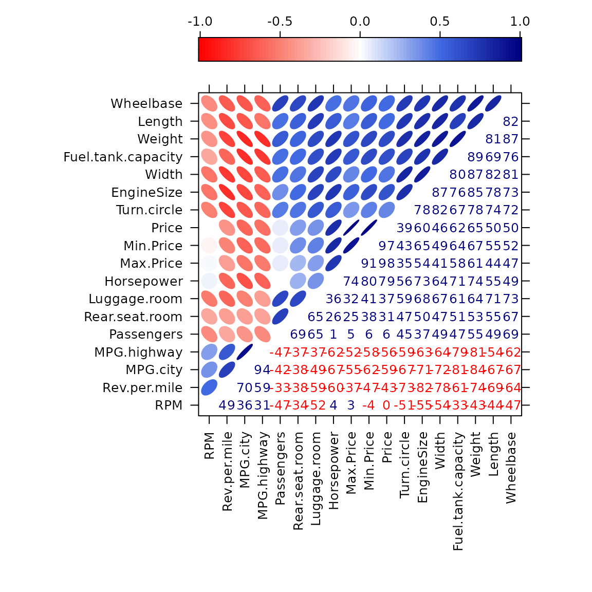
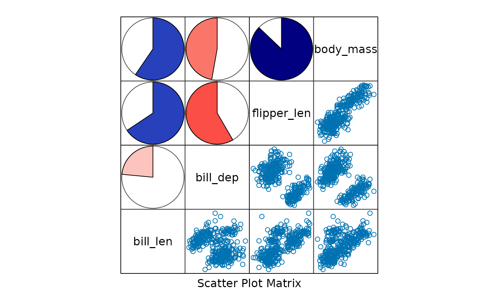
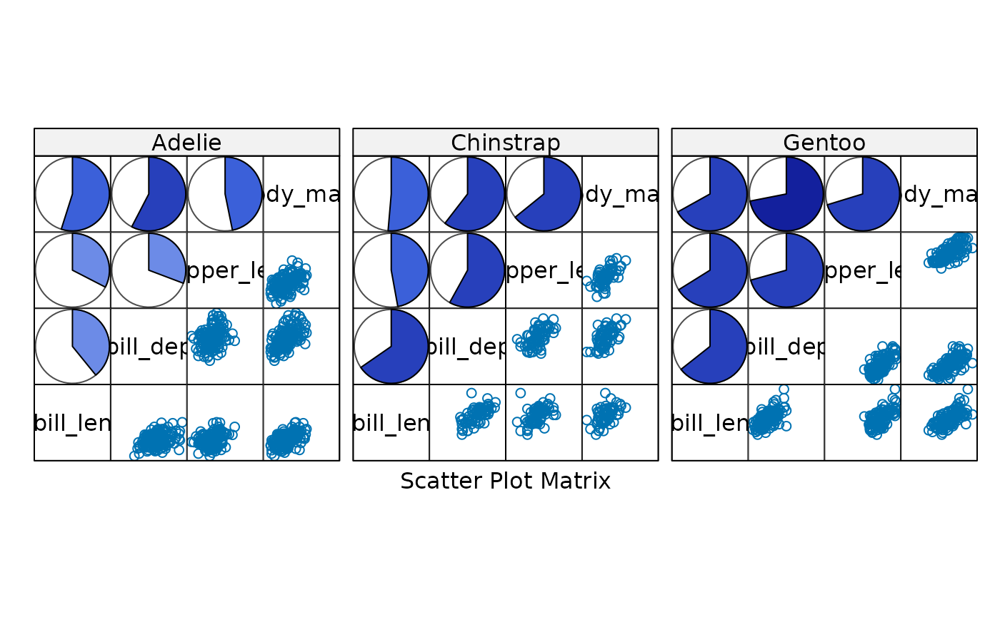
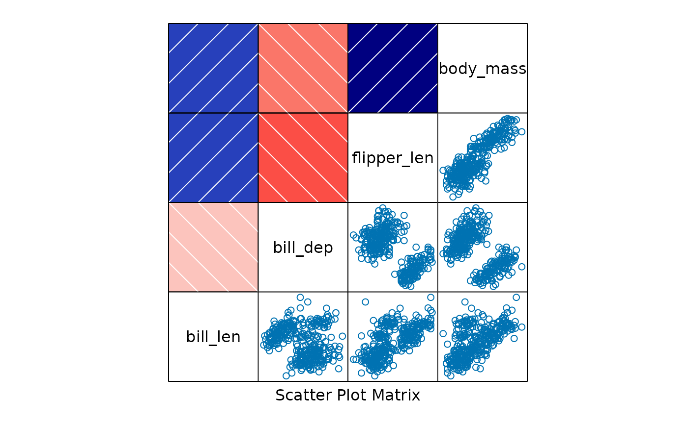
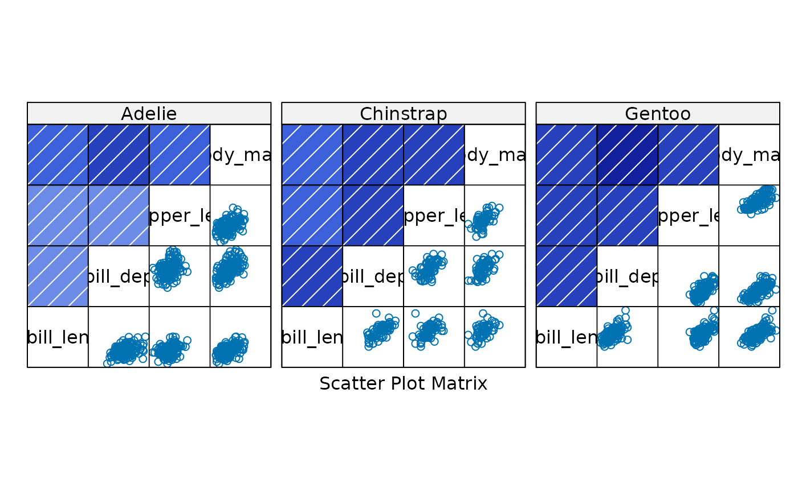
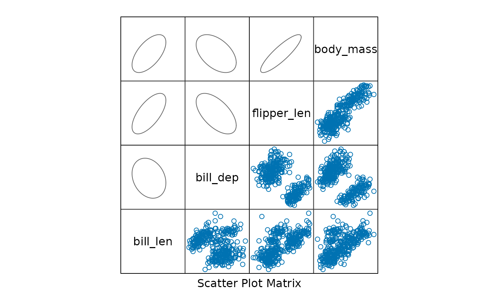
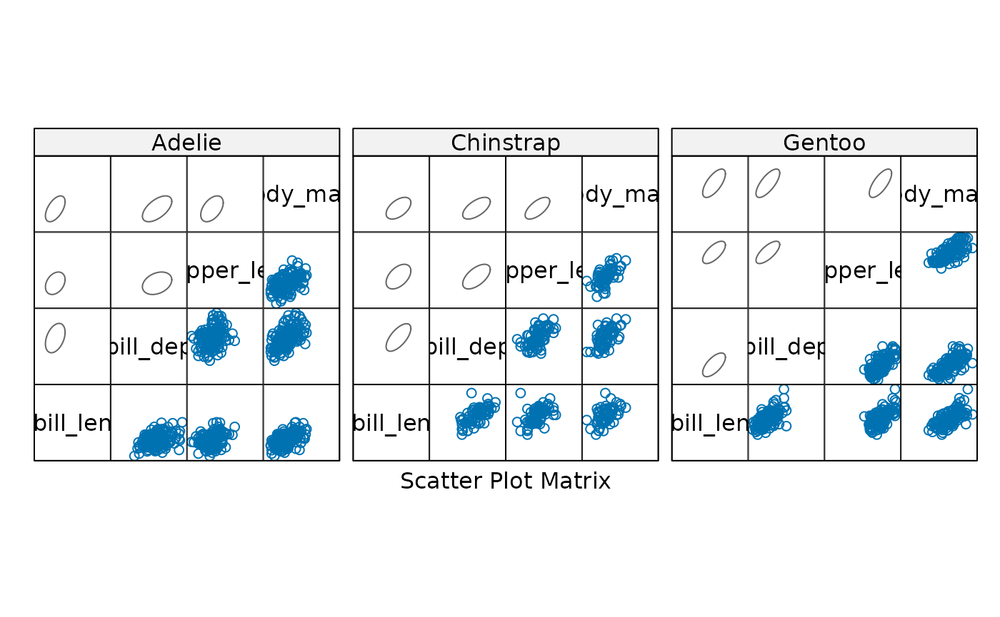
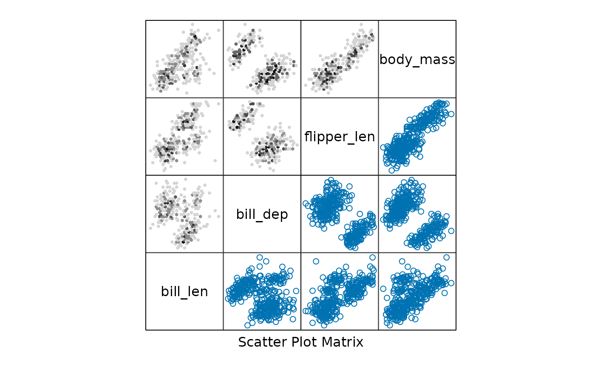
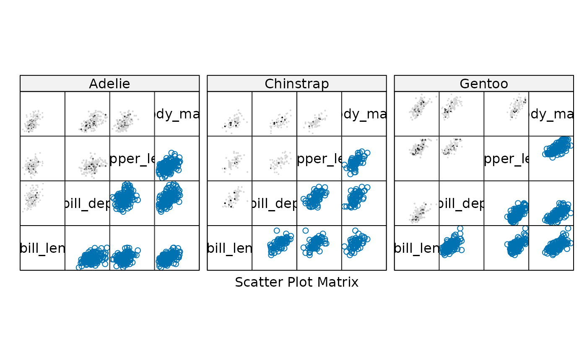

Examples of lattice corrgrams
Kevin Wright
2026-05-18
Source:vignettes/corrgram_lattice.Rmd
corrgram_lattice.RmdPackage overview
The corrgram package provides functions for creating
corrgrams using three different graphics systems, base, grid, and
lattice.
Base R graphics + single function corrgram() for
dataframes or matrices. + Enables most features found in the paper by
Friendly (2002). - No automatic legend. -
Not easily combined with other graphics.
lattice graphics + Separate panel functions for
lattice::levelplot() for dataframes and
lattice::splom() for correlation matrices. + Enables
automatic legend. + Enables corrgrams conditioned on other variables. +
Can be combined with other lattice graphics for complex figures. - Not
feature complete compared to base R.
grid graphics + single function corrgram2()
for either dataframes or correlation matrices. + Enables automatic
legend. + Can be combined with other grid graphics for complex figures.
- Not feature complete compared to base R. + Faster than base R when
evaluated inside Positron.
This vignette
This vignette demonstrates how to create corrgrams using
lattice graphics, you can use some custom panel functions
provided in the corrgram package along with the
lattice::splom() or lattice::levelplot()
functions. An example of each type of corrgram is shown below.
Correlation matrix corrgram in lattice
The levelplot() function in lattice only has a single
plotting region, so does not (by default) suppot upper and lower panels.
However, you can write a custom panel function with different glyphs
above and below the diagonal. See the panel.ellipse()
example below.
Using splom() makes it easy to include a color scale
next to the corrgram.
##
## Attaching package: 'corrgram'## The following object is masked from 'package:lattice':
##
## panel.fill
# The easiest way to have an automatic color key is to set the theme
opar <- trellis.par.get()
trellis.par.set(
regions=list(col=colorRampPalette(c("red","salmon","white","royalblue","navy")))
)
# Create a correlation matrix
library(MASS) # foor Cars93
cor.Cars93 <- cor(Cars93[, !sapply(Cars93, is.factor)], use = "pair")
ord <- order.dendrogram(as.dendrogram(hclust(dist(cor.Cars93))))
cars93 <- cor.Cars93[ord,ord]
head(cars93)## RPM Rev.per.mile MPG.city MPG.highway Passengers
## RPM 1.0000000 0.4947642 0.3630451 0.3134687 -0.4671376
## Rev.per.mile 0.4947642 1.0000000 0.6958570 0.5874968 -0.3349756
## MPG.city 0.3630451 0.6958570 1.0000000 0.9439358 -0.4168559
## MPG.highway 0.3134687 0.5874968 0.9439358 1.0000000 -0.4663858
## Passengers -0.4671376 -0.3349756 -0.4168559 -0.4663858 1.0000000
## Rear.seat.room -0.3421751 -0.3770096 -0.3843469 -0.3666844 0.6941337
## Rear.seat.room Luggage.room Horsepower Max.Price Min.Price
## RPM -0.3421751 -0.5248449 0.036688212 0.02501478 -0.04259816
## Rev.per.mile -0.3770096 -0.5927915 -0.600313870 -0.37402421 -0.47039499
## MPG.city -0.3843469 -0.4948936 -0.672636151 -0.54781090 -0.62287544
## MPG.highway -0.3666844 -0.3716291 -0.619043685 -0.52256074 -0.57996581
## Passengers 0.6941337 0.6533166 0.009263668 0.05321592 0.06123644
## Rear.seat.room 1.0000000 0.6519675 0.256731532 0.24725979 0.37664210
## Price Turn.circle EngineSize Width
## RPM -0.004954931 -0.5056506 -0.5478978 -0.5397211
## Rev.per.mile -0.426395113 -0.7331596 -0.8240086 -0.7804604
## MPG.city -0.594562163 -0.6663889 -0.7100032 -0.7205344
## MPG.highway -0.560680362 -0.5936833 -0.6267946 -0.6403592
## Passengers 0.057860074 0.4490247 0.3727212 0.4899786
## Rear.seat.room 0.311498819 0.4663276 0.5027498 0.4656176
## Fuel.tank.capacity Weight Length Wheelbase
## RPM -0.3333452 -0.4279315 -0.4412493 -0.4678123
## Rev.per.mile -0.6097098 -0.7352642 -0.6902333 -0.6368238
## MPG.city -0.8131444 -0.8431385 -0.6662390 -0.6671076
## MPG.highway -0.7860386 -0.8106581 -0.5428974 -0.6153842
## Passengers 0.4720951 0.5532730 0.4852941 0.6940544
## Rear.seat.room 0.5096887 0.5262505 0.5499578 0.6672586
# lattice corrgram using pie-shaped glyphs
levelplot(cars93, xlab = NULL, ylab = NULL,
at = do.breaks(c(-1.01, 1.01), 101), panel = levelplot_panel.pie,
scales = list(x = list(rot = 90)), colorkey = list(space = "top") )
# lattice corrgram using ellipse-shaped glyphs above the diagonal
# and value labels below the diagonal
levelplot(cars93, xlab = NULL, ylab = NULL,
at = do.breaks(c(-1.01, 1.01), 101), panel = levelplot_panel.ellipse,
label=TRUE,
scales = list(x = list(rot = 90)), colorkey = list(space = "top") )
Scatterplot matrix corrgram in lattice
Since the lattice::splom() function supports
conditioning on a factor, we can use it to create corrgrams that are
conditioned on a factor.
The penguins data provides a nice example of Simpson’s paradox, where the overall correlation between two variables can be negative, but the correlation within each group (species) can be positive.
pengvars <- c("bill_len", "bill_dep", "flipper_len", "body_mass")
library(lattice)
splom(~penguins[ , pengvars], upper.panel=splom_panel.pie, pscales=0)
splom(~penguins[ , pengvars]|penguins$species, upper.panel=splom_panel.pie, pscales=0)
splom(~penguins[ , pengvars], upper.panel=splom_panel.shade, pscales=0)
splom(~penguins[ , pengvars]|penguins$species, upper.panel=splom_panel.shade, pscales=0)
splom(~penguins[ , pengvars], upper.panel=splom_panel.ellipse, pscales=0)
splom(~penguins[ , pengvars]|penguins$species, upper.panel=splom_panel.ellipse, pscales=0)
You can also use the hexbin package to create hexagonal
binning plots in the upper panels of the scatterplot matrix. This is
useful when you have a large number of points and want to visualize the
density of points in different regions of the plot.
# Hexbin
library(lattice)
library(hexbin)
splom(~penguins[ , pengvars], upper.panel=hexbin::panel.hexbinplot, pscales=0)
splom(~penguins[ , pengvars]|penguins$species, upper.panel=hexbin::panel.hexbinplot, pscales=0)